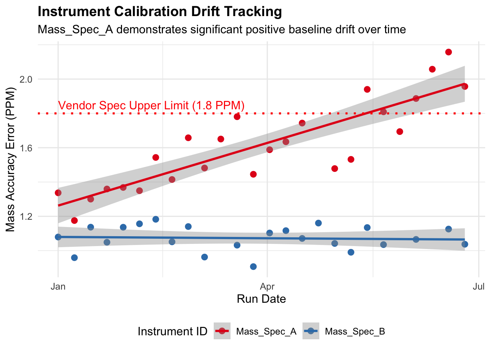

Before starting, we need to load packages for data processing, loading, and plotting.
library(tidyverse)
── Attaching core tidyverse packages ──────────────────────── tidyverse 2.0.0 ──
✔ dplyr 1.2.1 ✔ readr 2.2.0
✔ forcats 1.0.1 ✔ stringr 1.6.0
✔ ggplot2 4.0.3 ✔ tibble 3.3.1
✔ lubridate 1.9.5 ✔ tidyr 1.3.2
✔ purrr 1.2.2
── Conflicts ────────────────────────────────────────── tidyverse_conflicts() ──
✖ dplyr::filter() masks stats::filter()
✖ dplyr::lag() masks stats::lag()
ℹ Use the conflicted package (<http://conflicted.r-lib.org/>) to force all conflicts to become errors
library(readxl)
Warning: package 'readxl' was built under R version 4.6.1
library(ggplot2)
5.3 QC Data Wrangling & Clenaing
Typically, equipment run information or logs will be stored as CSV or Excel-formatted files. We have already seen how to load a CSV file in R, but let’s go over how to load an Excel file. Earlier we loaded the readxl package which allows us to do so. For this portion we have simulated data we will use, but this can be exapnded to any operational instrument information. You can download a copy of the data here.
5.3.1 Handling Missing Values (NAs) from Failed Runs
Instrument aborts or sensor read errors produce missing values, putting a zero or empty cell when written to a file. When we load these in to dataframes, R automatically will replace cells with missing values to NA. If we try to perform any transformation or plotting, NAs can often produce errors and complications downstream. In this case we are going to remove failed runs from the dataset, in some cases you may be interested in logging them for metric analysis.
ms_raw |>filter(is.na(Mass_Accuracy_PPM))ms_clean <- ms_raw |>filter(!is.na(Mass_Accuracy_PPM))1print(paste0("Raw run logs: ", nrow(ms_raw), " | Clean run logs: ", nrow(ms_clean)))
1
nrow() takes a vector or dataframe as input, and returns a numerical for the number of rows it contains.
# A tibble: 4 × 3
Run_Date Instrument_ID Mass_Accuracy_PPM
<date> <chr> <dbl>
1 2026-03-12 Mass_Spec_B NA
2 2026-04-23 Mass_Spec_A NA
3 2026-05-28 Mass_Spec_B NA
4 2026-06-11 Mass_Spec_B NA
[1] "Raw run logs: 52 | Clean run logs: 48"
5.4 Determining If There is a Distance in Labor Time For Lab Protocols
Let’s say we were interested in determining if there is a difference in labor time between two library preparation protocols, Ribodepletion and Standard PolyA, in our NGS core ahead of our upcoming rate study. Here we will perform a Welch two sample t-test to determine this and will use the t.test() function.
5.4.1 Welch’s t-Test
We are using the formula interface of the function, where we provide the numerical values first then the categorical values to the left, separated by a tilde ~. We then provide the data we loaded earlier.
t_test_res <-t.test(Days_to_Deliver ~ Prep_Kit, data = ngs_raw)t_test_res
Welch Two Sample t-test
data: Days_to_Deliver by Prep_Kit
t = 11.08, df = 72.449, p-value < 2.2e-16
alternative hypothesis: true difference in means between group Ribodepletion and group Standard PolyA is not equal to 0
95 percent confidence interval:
6.405520 9.215692
sample estimates:
mean in group Ribodepletion mean in group Standard PolyA
14.227273 6.416667
5.4.2 Visualization with ggplot2 BoxPlot
We can then visualize this as a boxplot using ggplot2.
ngs_time_p <-ggplot(ngs_raw, aes(x = Prep_Kit, y = Days_to_Deliver, fill = Prep_Kit)) +geom_boxplot(alpha =0.6, outlier.shape =NA) +geom_jitter(width =0.15, alpha =0.8, color ="#333333") +scale_fill_manual(values =c("Standard PolyA"="#2b5c8f", "Ribodepletion"="#d95f02")) +labs(title ="NGS Turnaround Time by Sample Preparation Kit",subtitle =paste("t-test p-value:", format.pval(t_test_res$p.value, digits =3)),x ="Library Preparation Protocol",y ="Days to Delivery",fill ="Prep Kit" ) +theme_minimal(base_size =12) +theme(legend.position ="none",plot.title =element_text(face ="bold") ) ngs_time_p
What if we suspect there is a problem with our mass spec calibration drifting, or a laser intensity decay issue and the onboard diagnostics are not reporting an issue. We can manually investigate this without wasting reagents, or instrument run time using linear regression.
5.5.1 Fit linear model per instrument
We will use the lm() function the base R package stats. It fits a linear model to a specified dataset, and then can be used for myriad of tasks such as regression, analysis of variance, and even analysis of covariance.
Then, we’ll extract the model coefficients with the coef() function. Look closely in the code block below. Do you recongize certain dataframe manipulation techniques we used earlier in the workshop. If you are having a hard time visualizing what values we are pulling you can always inspect the output try it for yourself?
5.5.2 Visualizaing Linear Model with ggplot2 Line Graphs
Now that our data is clean, we will aggregate revenue trends and build report-ready figures.
ggplot(ms_clean, aes(x = Run_Date, y = Mass_Accuracy_PPM, color = Instrument_ID)) +geom_point(size =2.5) +geom_smooth(method ="lm", se =TRUE, linestyle ="dashed") +geom_hline(yintercept =1.8, linetype ="dotted", color ="red", linewidth =1) +annotate("text", x =min(ms_clean$Run_Date), y =1.85, label ="Vendor Spec Upper Limit (1.8 PPM)", color ="red", hjust =0) +scale_color_manual(values =c("Mass_Spec_A"="#e41a1c", "Mass_Spec_B"="#377eb8")) +labs(title ="Instrument Calibration Drift Tracking",subtitle ="Mass_Spec_A demonstrates significant positive baseline drift over time",x ="Run Date",y ="Mass Accuracy Error (PPM)",color ="Instrument ID" ) +theme_minimal(base_size =12) +theme(plot.title =element_text(face ="bold"),legend.position ="bottom" )
Warning in geom_smooth(method = "lm", se = TRUE, linestyle = "dashed"):
Ignoring unknown parameters: `linestyle`
`geom_smooth()` using formula = 'y ~ x'

5.6 Analysing Variance of \(Q30\) Scores from Different Sequencers
Finally, we are interested in visualizing the differences in project >\(Q30\) base scoring across two of our sequencers. To acheive this we will plot the
ggplot(ngs_raw, aes(x = Quality_Score_Q30, fill = Platform)) +geom_histogram(binwidth =1, alpha =0.7, position ="identity", color ="white") +facet_wrap(~Platform, ncol =1) +scale_fill_manual(values =c("NovaSeq"="#1b9e77", "MiSeq"="#7570b3")) +labs(title ="Distribution of Q30 Quality Scores by Platform",x ="% Bases >= Q30",y ="Project Count" ) +theme_minimal(base_size =12) +theme(plot.title =element_text(face ="bold"),legend.position ="none" )
![]()